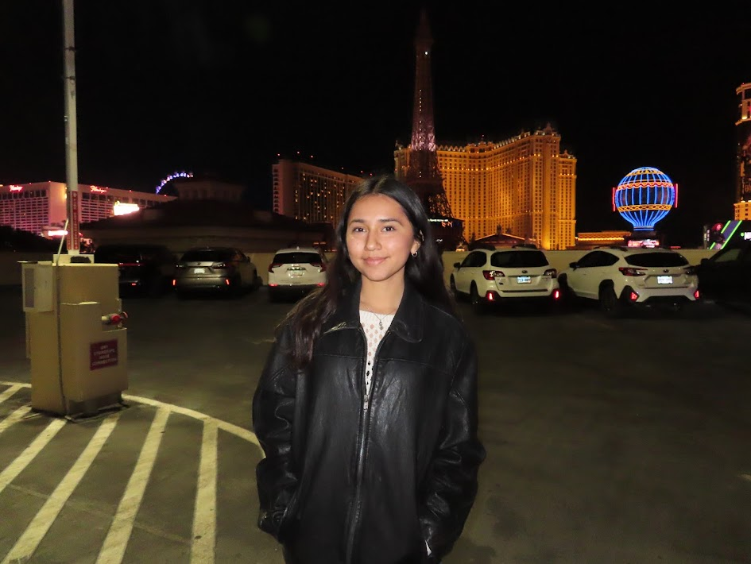

Nikky Bautista
(832)-980-8103 | nikkynb@byu.edu

Education
- Brigham Young Univeristy
- Special Events Coordinator of th BYUSA Unofficial Holiday Society
- Vice President of Design of the BYUSA Unofficial Holiday Society
- Intern for the Marketing Team of BYU Experience Design Society
- Member of BYUSA Arab Student Association and Marriott Inclusion and Belonging Society
Skills & Interests
- Bilingual: Native Spanish and English Speaker
- Technichal Skills: VBA, SQL, Tableau, Salesforce
- Marketing Skills: Social Media Marketing
Experience
- Team Lead of Logistics and Reception Operations
- Supervise a team of receptionists, ensuring smooth daily operations and providing guidance as needed
- Manage shift scheduling and optimize staffing to meet service demands efficiently
- Lead onboarding and training programs for new receptionists, introducing them to roles, responsibilities, and new
procedures
- Develop and implement operational procedures to improve workflow and service delivery
- Identify and resolve procedural challenges, ensuring continuous improvement in reception service
- Collaborate with senior executives to maintain strong relationships and align operational goals with organizational
objectives
- Marketing Team Intern
- Develop innovative strategies to engage and interact with students, fostering community involvement
- Create engaging and dynamic content tailored to student interests, driving interaction and participation
- Design and execute advertising campaigns to promote EXDS events, enhancing event visibility and attendance